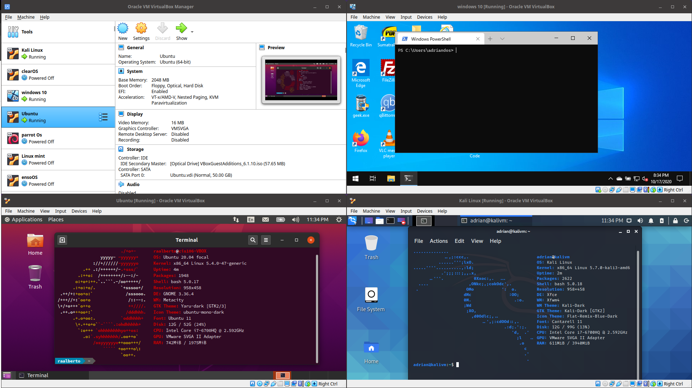

Virtualization is the process of running a virtual instance of a computer system
in a layer abstracted from the actual hardware. Most commonly, it refers to running multiple operating
systems on a computer system simultaneously.
-Opensource.com
Virtualization allows system administrators to replicate make-believe computers inside a single computer. The abstraction of computing resources can be achieved via software, hardware, or a mix of both. The concept of virtualization is believed to have been originated during the 1960s and 70’s when IBM started experimenting in time-sharing computing. Today, the computers that power the IT infrastructure of many organizations, including Cloud Computing, utilize virtualization techniques to create large aggregated pools of logical resources (CPUs, memory, disks, etc) from where an array of servers/services can run.
Virtualization is achieved via the use of a hypervisor. A hypervisor is the piece that allows the creation and management of virtual machines. A hypervisor can be physical (bare metal) or software. A virtual machine (VM) is the emulated equivalent of a computer system that runs on top of another system. There are two types of hypervisors, Type 1 and Type 2.
Any workstation that will implement virtual machines must meet the following criteria:
When deciding how to use the overall budget for a virtualization workstation, prioritize the number of CPU cores and the amount of installed RAM.
These instructions are carried out in Virtualbox. "VirtualBox is a powerful x86 and AMD64/Intel64 virtualization product for enterprise as well as home use. Not only is VirtualBox an extremely feature-rich, high-performance product for enterprise customers, it is also the only professional solution that is freely available as Open Source Software under the terms of the GNU General Public License (GPL) version 2." -Oracle